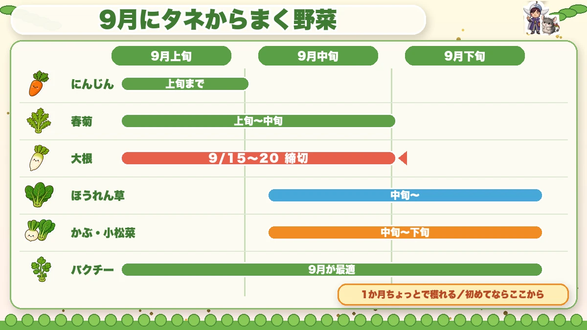
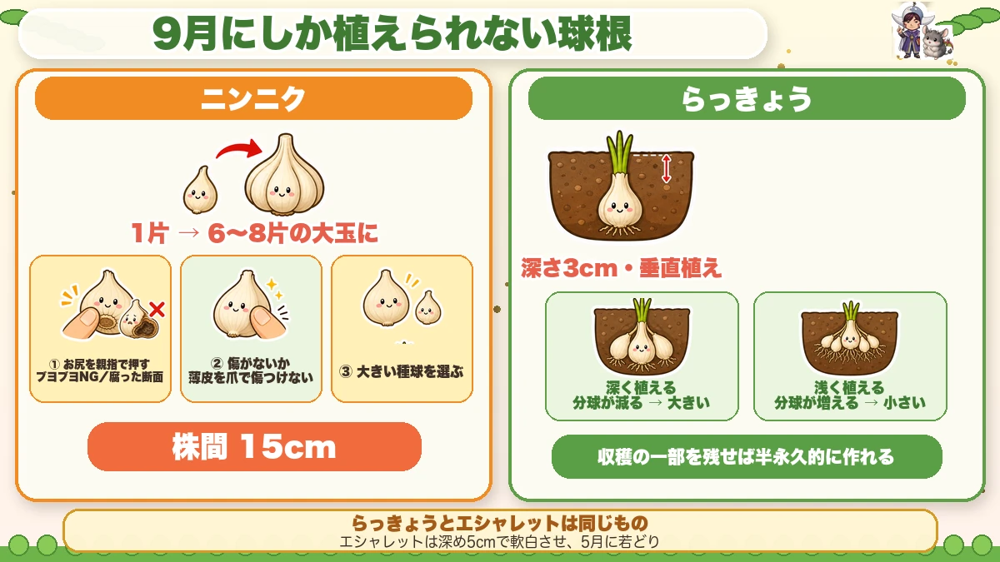
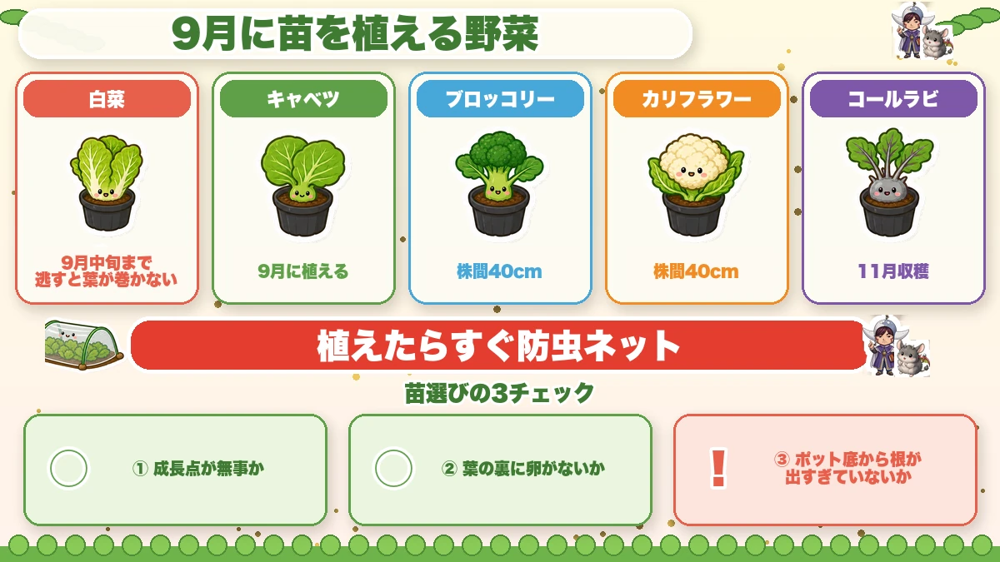
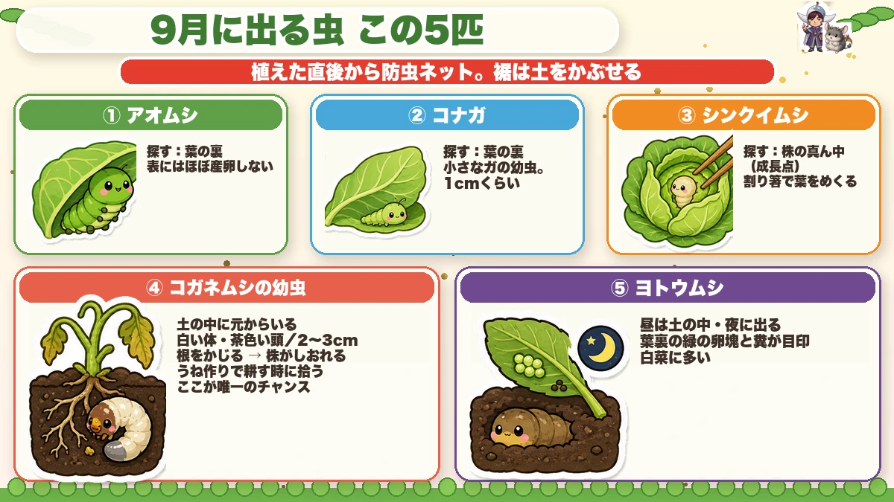

9月にまく・植える野菜｜大根と葉物の種まき・にんにくの植えつけ・白菜の苗・秋の虫対策
📖 この記事の目次
この記事で分かること
- 9月は、秋冬野菜のスタートの月です。種をまくもの、球根を植えるもの、苗を植えるものが一気に重なります。
- 大きな大根を年内にとりたいなら、9月の前半にまき終えるのが目安です。
- ほうれん草、かぶ、小松菜、春菊などの葉物は、9月の中ごろから下旬にかけてまけます。
- にんにくは、9月の終わりから10月が植えつけの中心。らっきょうも9月に植えます。
- 白菜は、大玉にしたいなら早めに苗を植えます。キャベツやブロッコリーの苗も9月に植えます。
- 9月は虫が多い時期。種をまいたらすぐに防虫ネットをかけ、すそに土をかぶせます。
- ただし、最近は秋の暑さが長引く年も多く、「早めにまく」か「涼しくなるまで待つ」か、説明が分かれています。
夏野菜の片づけがひと段落して、ようやく少し涼しい風が吹き始める9月。畑はちょっとさびしくなりますが、ここからが秋冬野菜の本番です。
大根、白菜、ほうれん草、にんにく。冬の食卓に欠かせない野菜の多くが、9月にスタートします。でも、種まきや植えつけの時期が重なって、「何から手をつければいいの？」と迷う方も多いと思います。
安心してください。9月にやることは、「種をまくもの」「球根を植えるもの」「苗を植えるもの」の3つに分けると、すっきり整理できます。この記事では、それぞれの野菜の時期とやり方、そして9月に気をつけたい虫まで、順番に書いていきます。

早見：9月の畑の基本（ひと目で分かる目安）
種からまく野菜
- 大根：大きな大根を年内にとるなら、9月初めから中旬までに
- ほうれん草：9月中旬ごろから
- かぶ・小松菜：9月中旬から下旬
- 春菊：9月上旬から中旬
- パクチー：9月が始めやすい
- にんじん：9月上旬までに（それ以降は、春まで待つほうが無難）
球根で植える野菜
- にんにく：9月の終わりから10月が中心。地域によっては11月まで
- らっきょう：9月中旬から下旬
- ホーム玉ねぎ（小さな玉から育てる玉ねぎ）：8月の終わりから9月の初め
苗で植える野菜
- 白菜：大玉なら9月中旬までに。無農薬でミニ白菜なら10月でも
- キャベツ・ブロッコリー・カリフラワー：9月
- コールラビ：9月に植えて、11月ごろ収穫
9月に気をつけたい虫
- アオムシ・コナガ：葉の裏
- シンクイムシ：株のまん中（成長点）
- コガネムシの幼虫：土の中
- ヨトウムシ：昼は土の中、夜に出てくる。9月後半から活発に
いちばん大事なこと
- 種をまいたら、その日のうちに防虫ネットをかける
- ネットのすそは、土をかぶせてすき間をふさぐ
- 大きな大根や大玉の白菜は、遅れると取り返しにくい。早めの準備を
作業の手順
ここからは、9月の作業を順番に書いていきます。
9月の作業カレンダー（上旬・中旬・下旬）
- 上旬：夏野菜の片づけと土づくり。大根の種まき（大きな大根）。にんじんのまき残しを終える。春菊の種まき。ホーム玉ねぎの植えつけ
- 中旬：白菜・キャベツ・ブロッコリーの苗を植える。ほうれん草・かぶ・小松菜の種まき。らっきょうの植えつけ。大根の間引き
- 下旬：にんにくの植えつけの準備と植えつけ。葉物の追加の種まき。ヨトウムシの見回りを強める
地域や、その年の暑さによって前後します。暖かい地域は少し遅め、寒い地域は早めに考えてください。
手順1：夏野菜を片づけて、土づくりをする
9月の作業は、夏野菜の片づけから始まります。トマトやきゅうりなど、実のつきが悪くなってきたものから順に片づけて、空いた場所に秋冬野菜の準備をします。
片づけた場所は、たい肥や肥料を入れて耕しておきます。植えつけや種まきの2週間くらい前までに土づくりをすませておくと、土がなじんで、根を傷めにくくなります。
ナスやピーマンなど、まだ元気に実をつけているものは、無理に片づけなくても大丈夫です。秋冬野菜を植える場所の計画を立てて、空ける順番を決めておきましょう。
片づけた夏野菜はどうするか
抜いた夏野菜の茎や葉（残さ）は、そのまま畑に埋めるより、一度乾かしてからたい肥の山に積むのがおすすめです。
生のまま大量に土に埋めると、土の中で分解が始まって、ガスや熱が出たり、虫が寄ってきたりします。そのすぐあとに種をまいたり苗を植えたりすると、芽や根を傷めることがあります。
病気が出ていた株は、たい肥にせず、畑の外に持ち出して処分してください。病気のもとを、次の野菜に持ちこまないためです。
大根の品種の選び方
大根は、品種によって形も、育つ日数も、得意な時期も違います。
- 青首大根：いちばん一般的な、首の部分が緑色の大根。育てやすく、煮物にもおろしにも使える
- 短い大根（短形種）：根の長さが短めで、土が深く耕せない畑やプランターでも育てやすい
- 早生の品種：育つ日数が短いので、種まきが少し遅れても間に合いやすい
- 晩生の品種：じっくり育つぶん、大きく育つ。早めの種まきが必要
種袋に書かれた「種まきから収穫までの日数」を見て、いつまでに収穫したいかから逆算して選ぶと失敗しにくくなります。
手順2：大根の種をまく
9月の種まきの主役は、大根です。
大きな秋まきの大根を年内にとりたいなら、9月の初め、遅くとも中旬までにはまき終えておきたいところです。大根は、寒くなると育つスピードが落ちるので、それまでにしっかり根を太らせておく必要があるからです。
まき方の基本です。
- 1か所に、4〜5粒ずつまく（点まき）
- 深さは、指の先の関節くらいまで差しこんだくらい。だいたい1〜1.5cmくらい
- 土をかぶせたら、上から手で押さえる（鎮圧）
- 種をまいたら、すぐに防虫ネットをかける
大根の種は、光が当たると芽を出しにくい性質があります。土はしっかりかけてください。
手順3：大根を間引く
芽が出たら、育つにつれて少しずつ間引いていきます。
- 本葉が1〜2枚のころ：3本に
- 本葉が3〜4枚のころ：2本に
- 本葉が5〜6枚のころ：1本に
大きな大根を1本しっかり育てたいなら、最後は1本立ちにします。間引いた大根の若い葉は、菜めしや炒めものにすると、とてもおいしいですよ。
一方で、1か所に2本残したり、株の間を狭くしたりして、小さめの大根を何本もとる、という育て方もあります。一度にたくさんとれても食べきれない家庭なら、こちらのほうが合っているかもしれません。
手順4：葉物の種をまく
9月の中ごろからは、葉物の種まきも始まります。
ほうれん草は、暑さが苦手で、涼しくなってからのほうが芽が出やすい野菜です。9月中旬以降、少し涼しくなってからまくと失敗しにくくなります。
かぶや小松菜は、育つのが早く、種まきから1か月から1か月半くらいで収穫できるものも多いです。何回かに分けて、時期をずらしてまいておくと、長く収穫を楽しめます。
春菊は、9月の上旬から中旬が種まきの時期です。葉を摘みとって収穫すると、脇から次々に新しい芽が出てきて、長くとれます。
パクチーは、暑さが苦手な野菜なので、9月にまくと育てやすいです。
葉物の種まきの基本です。
- すじまきにして、薄く土をかける
- 上から軽く押さえる
- すぐに防虫ネットをかける
- 芽が出たら、混んでいるところから間引く
葉物ごとの育て方のこつ
- ほうれん草：すじまきにして、本葉が出たら株の間が3〜5cmになるように間引く。草丈が20cmくらいになったら収穫どき
- かぶ：小かぶなら株の間を5〜10cmに。根の直径が5cmくらいになったら収穫。とり遅れると割れたり、すが入ったりする
- 小松菜：育つのが早く、種まきから1か月ちょっとでとれることも。草丈20〜25cmくらいが食べごろ
- 春菊：草丈が20cmくらいになったら、先端を摘みとって収穫。脇から伸びた芽を、また摘みとって長く楽しむ
どの葉物も、間引いた若い葉は捨てずに、おひたしやみそ汁の具に使えます。
パクチーの育て方
パクチーは、暑さが苦手で、涼しい季節を好む野菜です。9月にまくと、秋から冬にかけて収穫できます。
- 種は、2つの種がくっついた殻に包まれています。まく前に軽く割ってからまくと、芽が出やすくなる、と言われます
- 芽が出るまでに少し時間がかかるので、乾かさないように待ちます
- 草丈が15〜20cmくらいになったら、外側の葉から摘みとって収穫します
手順5：にんじんは9月上旬まで
秋に収穫するにんじんは、夏（7月ごろ）にまくのが一般的です。9月に入ってからまくと、寒くなる前に根が十分に太らないことが多くなります。
9月にまくなら、上旬までに。それより遅くなりそうなら、無理をせず、来年の春まきや夏まきにまわすほうが確実です。

手順6：にんにくを植える準備をする
にんにくは、秋に植えて、冬を越させ、翌年の5月から6月に収穫する野菜です。
植えつけの時期は、9月の終わりから10月が中心です。地域によっては、11月まで植えつけられます。
準備の流れです。
- 植える2週間くらい前までに、土づくりをすませておく
- 種にんにく（種用の球）を、1片ずつにばらす
- 大きくて形のよい片を選ぶ（小さすぎる片は、大きく育ちにくい）
種にんにくの皮を全部むいてから植える、というやり方を紹介している方もいます。皮をむくと芽が出やすくなる、という考え方です。むかずにそのまま植える方も多いので、どちらでも育ちます。
手順7：にんにくを植える
- とがったほうを上にして植える
- 深さは、片の高さの2倍くらいが目安（土の上から5cmくらい）
- 株の間は、15cmくらいあける
- 黒いマルチを張ってから植えると、雑草をおさえて、冬のあいだの地温も保てる
植えたあとは、1か月くらいたってから追肥を始めます。寒さの厳しい1月から2月は追肥を休み、暖かくなってくる3月ごろから再開する、という育て方の例があります。
にんにくは、「植えたら放っておくだけ」と思われがちですが、追肥や、春に出てくる芽の整理など、ちょっとした世話で仕上がりが変わります。
にんにくの品種と、春の芽かき
にんにくには、寒い地域向きの品種と、暖かい地域向きの品種があります。住んでいる地域に合わない品種を植えると、玉が分かれなかったり、大きくならなかったりすることがあるので、種にんにくを買うときに確かめてください。
春になって暖かくなってくると、1つの片から2本の芽が出てくることがあります。そのままにしておくと、玉が小さくなってしまうので、元気なほうを1本残して、もう1本はかきとります。かきとった芽も、炒めものなどに使えます。
さらに、5月ごろになると、茎の先につぼみ（にんにくの芽）が伸びてきます。これも早めに摘みとると、玉に栄養が回って、大きく育ちやすくなります。
手順8：らっきょうを植える
らっきょうは、9月の中ごろから下旬が植えつけの時期です。
- 種球を、1球ずつばらして植える
- とがったほうを上にして、先がわずかに見えるくらいの浅さで植える
- 株の間は、10〜15cmくらい
らっきょうは、やせた土地でも育つ丈夫な野菜です。肥料は控えめで大丈夫です。翌年の初夏に収穫できます。
手順9：ホーム玉ねぎを植える
ホーム玉ねぎは、小さな玉ねぎ（セット球）を植えて育てる方法です。年内に新玉ねぎを収穫できるのが魅力です。
植えつけは、8月の終わりから9月の初めごろ。9月に入ってからだと、葉は育っても、大きな玉にならないことがあります。急いで植えたいところです。

手順10：白菜の苗を植える
白菜は、苗で植えるのが育てやすい野菜です。
大玉の白菜は、育つ期間が長く、外側の葉（外葉）が十分に大きくならないと、玉が巻きません。寒くなる前に外葉を大きく育てる必要があるので、早めに植えるのが大事です。9月中旬までには植えておきたいところです。
- 株の間は、40〜45cmくらいあける
- 植えたら、すぐに防虫ネットをかける
- 水をたっぷりやって、根づかせる
一方で、無農薬で育てるなら、虫が少なくなる10月に植えたほうがいい、という考え方もあります。その場合は、早く育つミニ白菜や早生の品種を選びます。大玉にこだわるか、虫の少ない時期を選ぶか。ここは、目的によって選んでください。
白菜の品種の選び方
- 早生の品種：植えてから収穫までの日数が短い。少し植えつけが遅れても間に合いやすい
- 中生・晩生の品種：じっくり育って大きな玉になる。早めの植えつけが必要
- ミニ白菜：小さめの玉で、育つ日数も短い。株の間を狭くできるので、小さな畑にも向いている
家族が少ないなら、ミニ白菜を何株か植えるほうが、食べきりやすくて便利かもしれません。
手順11：キャベツ・ブロッコリー・カリフラワーの苗を植える
7月から育ててきた苗、またはお店で買った苗を、9月に畑へ植えます。
- 本葉が4〜5枚になった苗を植える
- 株の間は、40〜50cmくらい
- 植えたら、防虫ネットをかける
- 暑い日が続くなら、しばらく寒冷紗などで日差しをやわらげる
キャベツやブロッコリーも、白菜と同じで、寒くなる前に外葉をどれだけ大きくできるかが勝負です。植えつけを遅らせないようにしましょう。
手順12：コールラビを植える
コールラビは、茎の根元がかぶのように丸くふくらむ、キャベツのなかまの野菜です。9月に苗を植えると、11月ごろに収穫できます。
育てるのはむずかしくなく、ふくらんだ部分は、皮をむいて生でも、炒めても、スープに入れてもおいしいです。ちょっと珍しい野菜を育ててみたい方におすすめです。
手順13：防虫ネットは、種をまいたその日に
9月は、まだ暑さが残り、虫がとても多い時期です。
防虫ネットは、芽が出てからではなく、種をまいたらすぐにかけてください。芽が出たときには、もう虫が卵を産みつけていた、ということがよくあります。
そして、ネットのすそには、必ず土をかぶせて、すき間をふさぎます。上から覆うだけでは、すそのすき間から虫が入りこんでしまいます。
手順14：9月の水やり
9月は、まだ暑さが残る日も多く、種をまいたばかりの畑や、植えたばかりの苗は乾きやすい時期です。
- 種をまく前に、畑をしっかり湿らせておく
- 芽が出るまでは、土の表面を乾かさない
- 植えたばかりの苗は、根づくまで、朝か夕方にたっぷり水をやる
- 根づいたら、土の乾き具合を見て、乾いていたらやる
昼の暑い時間に水をやると、土の中で水が温まって根を傷めることがあるので、朝の涼しいうちか、夕方にやるのが基本です。
9月に出る虫、この5匹を覚える

アオムシ・コナガ：葉の裏を見る
キャベツ、白菜、ブロッコリー、大根、かぶなど、アブラナ科の野菜の葉を食べる虫です。
アオムシは、モンシロチョウの幼虫で、緑色のいも虫です。コナガは、小さくて細長い幼虫で、さわるとぴくぴく動きます。どちらも、葉の裏にいることが多いので、葉をめくって見てください。
葉に小さな穴があいていたら、近くに必ずいます。見つけたら取り除きます。葉の上に緑色の小さなふんが落ちていたら、それもアオムシがいる目印です。
シンクイムシ：株のまん中を見る
シンクイムシ（ハイマダラノメイガの幼虫）は、大根や白菜、キャベツなどの株のまん中、いちばん新しい芽（成長点）にもぐりこんで食べる虫です。
成長点を食べられると、株がそれ以上大きくならなくなったり、白菜やキャベツの玉ができなくなったりします。被害が大きい虫なので、株のまん中に糸を張ったような巣や、黒いふんがないか、よく見てください。
種をまいたら、すぐに防虫ネットをかけることが、いちばんの対策です。
コガネムシの幼虫：土の中を疑う
コガネムシの幼虫は、土の中にいて、根を食べる白いいも虫です。
苗を植えたのに元気がない、引っ張るとぐらぐらする、というときは、根を食べられている可能性があります。株元の土を少し掘ってみて、白いいも虫がいたら取り除いてください。
ヨトウムシ：夜に出てくる
ヨトウムシは、昼は土の中にかくれていて、夜になると出てきて葉を食べる虫です。大きくなると食べる量が一気に増えるので、早めに見つけることが大切です。「夜盗虫」という名前のとおりですね。
朝見たら、葉がごっそり食べられているのに、虫が見当たらない。そんなときは、ヨトウムシを疑ってください。株元の土を浅く掘ると、丸まった幼虫が見つかることがあります。
9月の後半になると、ヨトウムシが活発になってきます。見回りを続けましょう。
失敗の見分け方
大根の芽が出ない
- 土を薄くかけすぎた：大根の種は、光が当たると芽が出にくくなります
- 乾燥した：9月はまだ暑く、土が乾きやすいです。種まきの前に畑を湿らせ、まいたあとも乾かさないようにします
- 鎮圧が足りなかった：種と土がくっついていないと、水を吸いにくくなります
大根が二股に分かれた・曲がった
土の中に石やかたいかたまり、まだ分解していない肥料があると、根がぶつかって分かれたり曲がったりします。深く耕して、石を取り除き、肥料は早めに入れておきます。
白菜が巻かない
- 植えるのが遅れて、寒くなる前に外葉が十分に育たなかった
- シンクイムシに株のまん中を食べられた
- 肥料が足りなかった
次の年は、植えつけを早めるか、早く育つ品種を選んでみてください。
ほうれん草の芽が出ない・育たない
- 暑い時期にまいた：ほうれん草は暑さが苦手です。少し涼しくなってからまき直します
- 土が酸性に傾いている：ほうれん草は、酸性の土が苦手と言われます
- 乾燥した：芽が出るまで、土を乾かさないようにします
芽が出ない原因は、1つとはかぎりません。暑さ、乾燥、土の状態を順に見直してください。
にんにくの芽が出ない
植えてから芽が出るまでには、しばらく時間がかかります。植えてすぐに出なくても、あせらずに待ってください。種にんにくの上下を逆に植えていないかも、確かめておくと安心です。
説明が分かれていること
種まきは「早め」か、「涼しくなるまで待つ」か
- 大きな大根は、9月の初めから中旬までにまき終える、という説明
- 暑さが続く年は、あせらずに、確実に気温が下がってくるまで待つ。これまでの常識より1か月くらい遅くなっても大丈夫、という説明
- 最近は10月も暑いので、10月にまいても遅くない。虫の多い時期を避けられる、という説明
- 天気はいつ変わるか分からない。9月の中旬から終わりに急に冷えこむかもしれないので、例年どおりの時期にまくほうが安心、という説明
同じ人の中でも、年によって説明が変わることがあります。大きな晩生の大根を年内にとりたいなら早め、小さめの品種や早生品種なら少し遅め、保温できるならさらに遅めでも、と、目的と品種で考えるのがおすすめです。
大根の種をまく深さ
- 人差し指の第1関節くらいの深さ
- 小指の第1関節くらい。1〜1.5cmくらい
指の長さは人によって違うので、だいたい1〜2cmくらいと考えておけば大丈夫です。
種をまいたあとの押さえ方
- 体重をかけて、しっかり押さえる（暑くて乾きやすい時期は特に）
- 軽くぽんぽんと押さえるだけ。強く押すと畝が低くなる
土が乾いているならしっかり、湿っているなら軽く、と土の状態で加減してください。
防虫ネットをかけるタイミング
- 種をまいたら、すぐにかける。芽が出てからでは遅い、という説明
- 芽が出たら、すぐにかける、という説明
9月は虫が多いので、種をまいたその日にかけておくほうが安心です。
にんにくは、9月しか植えられないか
- 9月の末が、植えつけにいちばんいい時期、という説明
- 10月が植えつけの時期で、11月まで植えられる、という説明
地域によって違います。9月にしか植えられないわけではないので、あわてなくて大丈夫です。
白菜は、早く植えるか、遅く植えるか
- 大玉の白菜は、育つ期間が長いので、早めに植える、という説明
- 無農薬で育てるなら、虫が少なくなる10月に植えて、ミニ白菜を選ぶ、という説明
大きさをとるか、虫の少なさをとるか。目的で選んでください。
大根の収穫どき、葉は立つか倒れるか
- 収穫が近づくと、葉が全部立ち上がる、という説明
- まっすぐ伸びていた葉が、外側に広がるように倒れ始めたら収穫の目安、という説明
まったく逆の説明があります。葉の向きだけで判断せず、根元から見えている大根の太さや、種袋に書かれた日数も合わせて見るのが確実です。
秋冬野菜に、追肥はいるか
- 大根や白菜には、ここ10年以上追肥をしたことがない、という経験
- 元肥が少なめなら、葉の色や育ち具合を見て追肥する、という説明
大根は肥料が多すぎると、根が割れたり、虫がつきやすくなったりします。白菜は、外葉を大きくするために、肥料が必要になることがあります。野菜によって違うので、「秋冬野菜には肥料がいらない」とひとまとめにしないでください。
ほうれん草を寒さに当てる期間
- トンネルで育てているなら、収穫の前に2週間くらい外の寒さに当ててから収穫するのがおすすめ、という説明
ほうれん草は、寒さに当たると甘みが増します。ただ、何日まで当てていいかの上限は、はっきりした決まりがあるわけではありません。
よくある質問
Q. 9月の作業が多すぎて、全部できません
A. 優先順位をつけましょう。9月は、1年の中でも特に作業が重なる月なので、全部を完ぺきにこなせなくても当たり前です。大きな大根や大玉の白菜は、遅れると取り返しにくいので、これを育てたいなら先に。葉物は、時期をずらしてもまけるので、あとからでも大丈夫です。にんにくは10月でも植えられます。
Q. 大根の種まきが遅れてしまいました
A. 小さめの品種や、育つ日数の短い早生の品種を選べば、まだ間に合うことがあります。また、葉を食べる大根や、ミニ大根を育てるのも一つの手です。寒くなってきたら、不織布をかけて保温すると、育ちを助けられます。
Q. 防虫ネットをかけたのに、虫がつきました
A. すそにすき間がなかったか、ネットに破れがなかったか確かめてください。種をまく前から土の中にいた虫や卵が、ネットの中で育つこともあります。ネットをかけていても、ときどき中をのぞいて、見つけたら取り除きましょう。
Q. 種にんにくは、スーパーのにんにくでもいいですか？
A. 芽が出ないように処理されていることがあったり、病気を持っていたりすることがあるので、種用として売られているものを使うのがおすすめです。品種によって、寒い地域向き、暖かい地域向きがあるので、住んでいる地域に合ったものを選んでください。
Q. 白菜の苗、何株植えればいいですか？
A. 白菜は1株でもかなりの量になります。大玉なら、1株で鍋が何回もできるほどです。家族の人数と、食べるペースを考えて決めてください。一度にたくさんとれても食べきれないなら、植える時期を少しずらしたり、ミニ白菜を組み合わせたりすると、長く楽しめます。
Q. 秋の野菜は、冬になったらどうなりますか？
A. 気温が10度を下回るころから、多くの野菜は育つのがゆっくりになって、やがてほとんど止まります。大根、にんじん、白菜、ねぎなどは、そのまま畑に置いておいても、ある程度は保存がきくので、冬のあいだに少しずつ収穫できます。
Q. 大根の葉が、穴だらけになってしまいました
A. アオムシやコナガ、ダイコンハムシなどに食べられています。葉の裏を見て、虫を見つけたら取り除いてください。小さな芽のうちに葉を全部食べられると、そのまま育たなくなることがあります。防虫ネットを、種をまいたその日からかけておくのがいちばんの予防です。根がしっかり育っていれば、外側の葉が少し食べられたくらいなら、収穫には大きく影響しません。
Q. 9月の暑さで、植えたばかりの苗がしおれてしまいます
A. 植えたばかりの苗は、根がまだ十分に張っていないので、暑い日はしおれやすくなります。植えつけは、曇りの日か、晴れた日なら夕方の涼しい時間を選んでください。植えたあとは、たっぷり水をやり、しばらくのあいだ寒冷紗や遮光ネットで日差しをやわらげてあげると落ちつきます。夕方にしおれが戻っているなら、心配いりません。何日たっても戻らない場合は、根が傷んでいるか、根元を虫に食べられていないかを確かめてください。
Q. プランターでも、9月の種まきはできますか？
A. できます。プランターなら、小松菜やかぶ、ほうれん草、春菊などの葉物がおすすめです。大根を育てるなら、根の短い品種やミニ大根を選び、深さのあるプランターを使ってください。プランターは乾きやすいので、芽が出るまでは特に水切れに気をつけます。防虫ネットも、プランター用の小さなものをかぶせておくと安心です。
Q. 間引いた大根の葉は、どうやって食べますか？
A. さっとゆでて刻み、ごはんに混ぜる菜めしや、ごま油で炒めてしょうゆで味つけするのが手軽です。みそ汁の具にしてもおいしいですよ。若い葉はやわらかいので、生のままサラダに入れる方もいます。
学ぶ🔬 なぜ秋冬野菜は「遅れ」が命取りになるのか
ここからは、9月の作業のしくみについて、少しだけ深く書いておきます。読み飛ばしても大丈夫です。
気温が下がると、育つのが止まる
野菜の多くは、気温が10度を下回るころから、育つスピードが一気に落ちていきます。そして、さらに寒くなると、ほとんど育たない、休んだような状態になります。
秋冬野菜は、この「育たなくなる日」までに、どれだけ大きくなれるかの勝負です。9月に始めるのが1週間遅れると、そのぶん育てられる期間が短くなって、収穫するときの大きさに差が出てしまうんです。
外葉は、栄養を作る工場
白菜やキャベツは、まず外側の葉（外葉）を大きく広げてから、内側の葉を巻いて玉を作ります。
外葉は、光を受けて栄養を作る工場のようなものです。工場が大きいほど、たくさんの栄養を作れて、大きな玉を育てられます。逆に、外葉が小さいまま寒くなると、玉を作るための栄養が足りず、玉が巻かなかったり、小さくなったりします。
大玉の白菜を早く植えるのは、寒くなる前に大きな工場を作っておくためなんですね。
なぜ大根の種は、土をしっかりかけるのか
種には、光があると芽を出しやすいもの（にんじん、レタスなど）と、光があると芽を出しにくいもの（大根、ねぎなど）があります。
大根は、光が当たると芽を出しにくい種です。だから、土をしっかりかけて、暗い状態にしてあげる必要があります。にんじんとは逆なので、気をつけてください。
なぜ9月は虫が多いのか
夏のあいだに数を増やした虫たちは、9月になってもまだたくさんいます。そこへ、やわらかい芽や苗が一斉に畑に並ぶので、虫にとってはごちそうがいっぱいの状態になるんです。
特に、アブラナ科の野菜（大根、白菜、キャベツ、ブロッコリー、かぶ、小松菜）は、アオムシやコナガ、シンクイムシなど、好んで食べる虫が多いなかまです。9月の種まきや植えつけで防虫ネットが欠かせないのは、このためです。
涼しくなるにつれて虫の動きもにぶくなっていくので、無農薬なら植えつけを少し遅らせる、という考え方が出てくるのも、ここにつながっています。
なぜにんにくは、秋に植えるのか
にんにくは、秋に植えると、まず根を伸ばし、少し葉を出したところで冬を迎えます。冬のあいだはほとんど育たず、じっと寒さに耐えています。
この冬の寒さにあたることが、にんにくにとって大切な合図になります。寒さを経験したにんにくは、春に暖かくなって日が長くなってくると、それを合図に、玉を分けて太らせ始めるんです。
春に植えても、寒さを十分に経験していないので、玉がうまく分かれず、大きくなりにくくなります。にんにくを秋に植えるのは、この冬の寒さを経験させるためなんですね。
アブラナ科というなかま
大根、かぶ、白菜、キャベツ、ブロッコリー、カリフラワー、小松菜、チンゲン菜、コールラビ。これらは、みんな「アブラナ科」という同じなかまの野菜です。春に黄色い菜の花を咲かせる、あのなかまですね。
同じなかまなので、好んで食べにくる虫も、かかりやすい病気も似ています。9月の秋冬野菜の多くがアブラナ科なので、虫の対策も共通してくるんです。
また、同じ場所でアブラナ科ばかりを続けて育てると、連作障害が出やすくなります。秋冬の作付けでは、前の年にアブラナ科を植えた場所を避けるか、ほうれん草（ヒユ科）やにんにく（ヒガンバナ科）など、別のなかまの野菜と組み合わせて場所を回すと安心です。
なぜほうれん草は、寒さで甘くなるのか
ほうれん草は、寒さにあたると、葉の中に糖をためこみます。水に糖が溶けていると凍りにくくなるので、寒さから身を守るためのしくみだと考えられています。
冬のほうれん草が甘いのはこのためです。トンネルで育てていても、収穫の前に外の寒さに当ててから収穫すると甘みが増す、と言われるのも、このしくみを利用したものです。
まとめ
ここまで読んでくださって、ありがとうございます！
9月の畑のポイントを、もう一度まとめておきます。
- 9月は、種まき・球根・苗の3つが重なる、秋冬野菜のスタートの月
- 大きな大根は9月の前半に。土はしっかりかけて、押さえる
- 葉物は、涼しくなってきた9月中旬から。時期をずらしてまくと長く楽しめる
- にんじんは9月上旬まで。遅れそうなら来年にまわす
- にんにくは9月末から10月が中心。らっきょうは9月中旬から
- 白菜は、大玉なら早めに。無農薬でミニ白菜なら10月でも
- 種をまいたら、その日に防虫ネット。すそは土でふさぐ
- アオムシ・コナガは葉の裏、シンクイムシは株のまん中、コガネムシの幼虫は土の中、ヨトウムシは夜
- 早めか待つかは説明が分かれる。目的と品種で決める
夏の疲れが残る9月ですが、ここでまいた種、植えた苗が、冬の食卓を支えてくれます。暑さの残る中での作業になるので、朝夕の涼しい時間を選んで、無理のないペースで進めてくださいね。全部を一度にやらなくても大丈夫。育てたい野菜を1つ決めて、その時期から逆算して始めてみてください。
寒い季節に、自分で育てた大根で作るおでんや、白菜たっぷりの鍋を囲めたら最高ですよね🥬
にんにくの種球
にんにくは早めに買うのが正解です。売り出しの後半に残っているものは傷んでいることが多いので。お尻がブヨブヨしていないか、傷がないかを確かめてから植えてください。
![[商品価格に関しましては、リンクが作成された時点と現時点で情報が変更されている場合がございます。]](https://hbb.afl.rakuten.co.jp/hgb/565b74ce.f30a48e7.565b74cf.8a827250/?me_id=1368676&item_id=10000301&pc=https%3A%2F%2Fthumbnail.image.rakuten.co.jp%2F%400_mall%2Farakawaseed%2Fcabinet%2Fcompass1659994587.jpg%3F_ex%3D240x240&s=240x240&t=picttext "[商品価格に関しましては、リンクが作成された時点と現時点で情報が変更されている場合がございます。]")

らっきょうの種球
一度植えれば、収穫の一部を残すだけで翌年の種球になります。半永久的に作り続けられるのが、らっきょうのいちばん好きなところです。
![[商品価格に関しましては、リンクが作成された時点と現時点で情報が変更されている場合がございます。]](https://hbb.afl.rakuten.co.jp/hgb/565b74ce.f30a48e7.565b74cf.8a827250/?me_id=1368676&item_id=10000258&pc=https%3A%2F%2Fthumbnail.image.rakuten.co.jp%2F%400_mall%2Farakawaseed%2Fcabinet%2Fcompass1628674080.jpg%3F_ex%3D240x240&s=240x240&t=picttext "[商品価格に関しましては、リンクが作成された時点と現時点で情報が変更されている場合がございます。]")
穴あき黒マルチ
ほうれん草を15cm間隔の穴あきマルチで育てると、株間を測らずに済んで一気にラクになります。
![[商品価格に関しましては、リンクが作成された時点と現時点で情報が変更されている場合がございます。]](https://hbb.afl.rakuten.co.jp/hgb/55521906.a3595d78.55521907.92994d18/?me_id=1225177&item_id=10035007&pc=https%3A%2F%2Fthumbnail.image.rakuten.co.jp%2F%400_mall%2Fssn%2Fcabinet%2F02584092%2F07223762%2F4980356008386_1.jpg%3F_ex%3D240x240&s=240x240&t=picttext "[商品価格に関しましては、リンクが作成された時点と現時点で情報が変更されている場合がございます。]")
苦土石灰
ほうれん草だけは例外で、これを入れないと芽が出ません。pH6.5〜7を目指します。
![[商品価格に関しましては、リンクが作成された時点と現時点で情報が変更されている場合がございます。]](https://hbb.afl.rakuten.co.jp/hgb/55e75fe5.20db4cd1.55e75fe7.d1ec32cc/?me_id=1194164&item_id=10000709&pc=https%3A%2F%2Fthumbnail.image.rakuten.co.jp%2F%400_mall%2Fgardening%2Fcabinet%2Fikou_20091001_001%2Fimg1043676078.jpg%3F_ex%3D240x240&s=240x240&t=picttext "[商品価格に関しましては、リンクが作成された時点と現時点で情報が変更されている場合がございます。]")
防虫ネット
9月は虫がいちばん多い月です。植えた直後からかけて、裾は土をかぶせてください。
![[商品価格に関しましては、リンクが作成された時点と現時点で情報が変更されている場合がございます。]](https://hbb.afl.rakuten.co.jp/hgb/56bc205d.0066fedc.56bc205e.af56d163/?me_id=1260467&item_id=10000299&pc=https%3A%2F%2Fthumbnail.image.rakuten.co.jp%2F%400_mall%2Fmarsol-morishita%2Fcabinet%2Fshouhinn%2Fbouchuu%2Fimgrc0090950099.jpg%3F_ex%3D240x240&s=240x240&t=picttext "[商品価格に関しましては、リンクが作成された時点と現時点で情報が変更されている場合がございます。]")